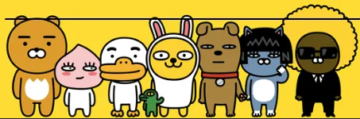

- 귀 높이를 포함하지 않았을 때 카카오프렌즈 캐릭터들 중 키가 가장 크다.
- 동물의 왕인 사자이고, 의지가 되는 조언자 포지션인 만큼 크게 만들었다고 한다.
- 카카오프렌즈 중 유일한 표정 변화(이목구비의 움직임)가 전혀 없는 캐릭터이다.
- 울 때도 부끄러워할 때도 표정에 변화가 없다. 콘의 경우 드물게 입을 벌리거나 눈을 깜빡이는 경우가 있는데 라이언의 경우 그조차도 없다.
- 잘 때도 눈을 뜨고 잔다. 이는 라이언이 모두를 챙기는 리더, 반장 같은 캐릭터라 쉬지 않고 항상 다른 친구들을 챙기는 든든한 라이언 이라는 특징이 있기 때문이다.
- 다만 꿀잠베이비필로우에서는 라이언이 눈을 감고 있는데, 이는 모두의 버팀목인 라이언도 휴식이 필요해요! 라는 컨셉으로, 힐링이 필요한 라이언에게 꿀 같은 단잠을 선사하고자 새로운 설정을 추가하게 되었다고 한다.
- 눈을 뜬 채로 깜빡 잠들었다가, 춘식이 자기를 무시한다고 오해한 나머지 삐져서 가출하는 참사가 일어났다. 이를 두고
라이언이 안대 쓰고 자는 이유가 이거였군요 라는 반응이 나왔다.
- 몸은 전체적으로 황토색인데 튤립 모양의 무늬가 들어간 배 부분과 콧방울만 흰색이다. 콧방울은 조랭이떡 모양이라, 홍대 인근 식당에서는 조랭이떡과 치즈로 라이언을 만든 메뉴를 선보이기도 했다.
- 꼬리가 길면 잡히기 때문에 꼬리가 짧다. 덕분에 더더욱 곰 같다.
|